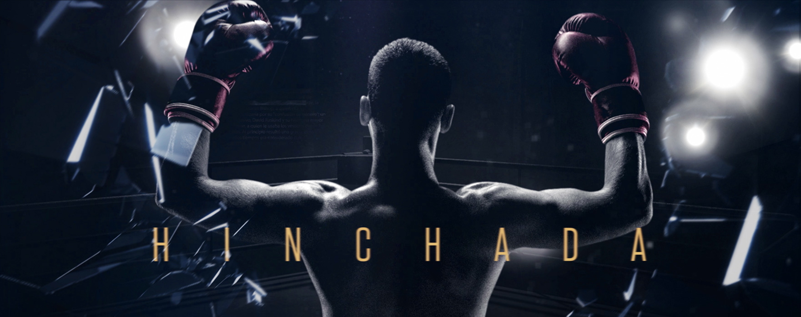
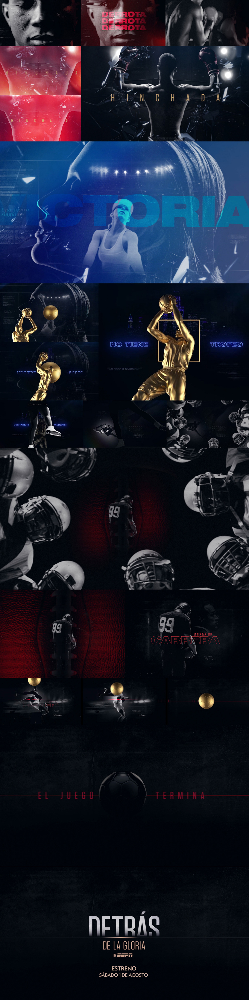

A promotional piece created for National Geographic's Behind the Glory, a documentary series that explores the stories behind some of the world's most celebrated athletes.
A promotional piece created for National Geographic's
Behind the Glory, a documentary series that explores
the stories behind some of the world's most
celebrated athletes.
The concept was built around the contrast between glory and controversy, highlighting the tension between public achievements and the lesser-known aspects of each athlete's life.
The concept was built around the contrast between glory
and controversy, highlighting the tension between public
achievements and the lesser-known aspects of each athlete's life.
